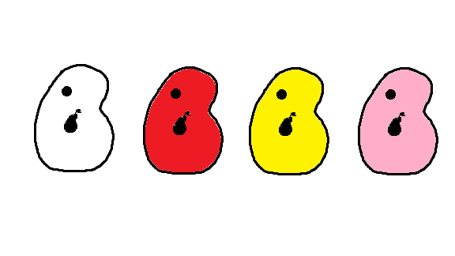
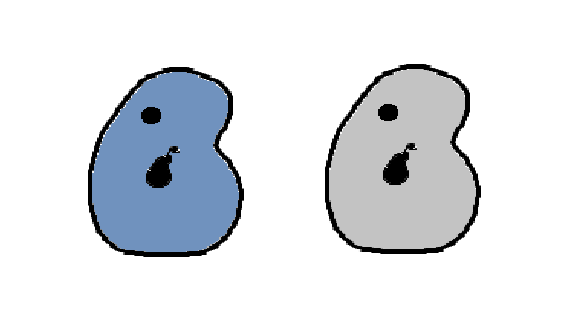

This is the best new smartphone out there. The Pear Phone is both affordable and stylish making it one of the hottest items on the market. It has a nice feel because of its innovative pear shape. The Pear Phone is available in a Grey, Pear, and White color.
| Model | Size and Weight | Cost | Storage Sizes |
|---|---|---|---|
| Pear Phone | Height: 5.78in. Width: 2.82in. Weight: 5.78oz. | $300 | 64GB, 128GB, 256GB |
| Pear Phone Mini | Height: 5.18in. Width: 2.53in. Weight: 4.76oz. | $250 | 64GB, 128GB, 256GB |
| Pear Phone Max | Height: 6.33in. Width: 3.07in. Weight: 8.03oz. | $500 | 128GB, 256GB, 512GB |
Introducing the new Pear Phone Mini. It has all of the great things you love in the regular Pear Phone just shrunk down. We like to call it fun size. Because of that we've made it available in multiple fun colors. As you can see below we offer the Mini in White, Red, Yellow, and Pink.
Introducing the new Pear Phone Max. Everything you love about the regular Pear Phone but we turned up the scale! Whether you like to have things just seen at a bigger scale, or you want to have better quality throughout your phone, the Max is our greatest thing yet. With better screen resolution and a better quality camera the Max is for those who like things bigger and better. Below show's the two available colors: Blue and Grey.
